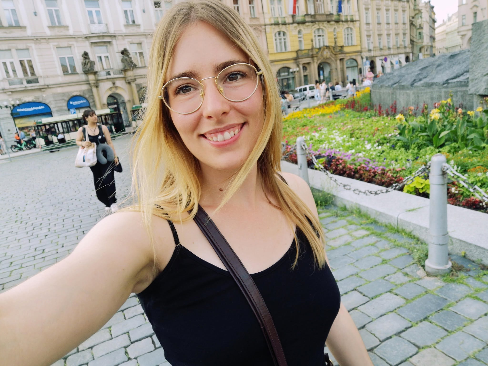
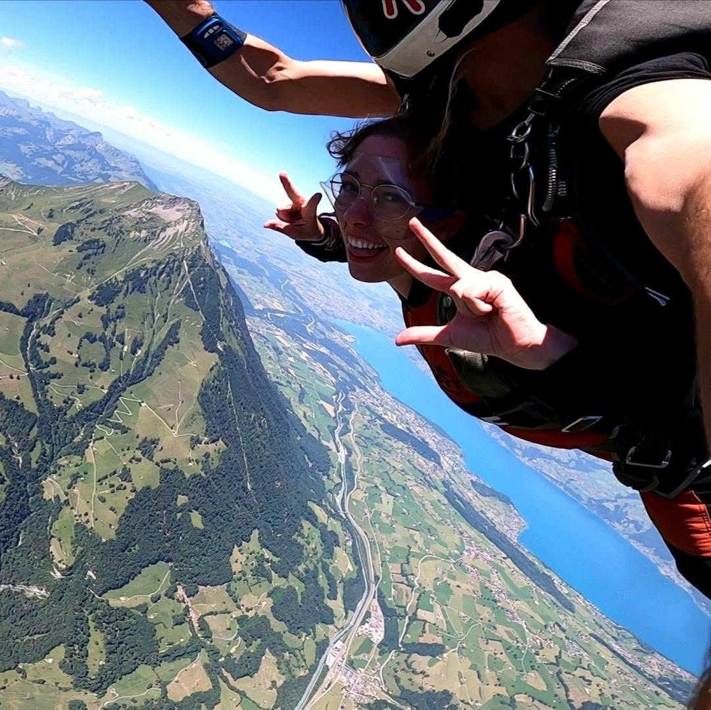
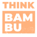
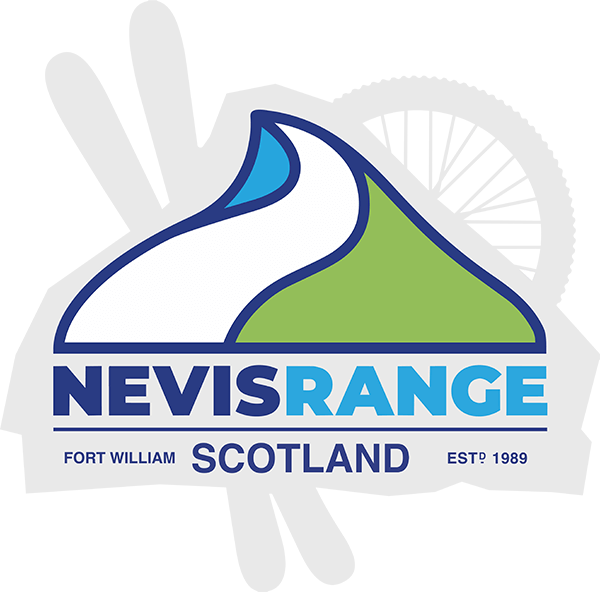

Context
I provide the task, source screens, constraints and decisions already made.
brief.md · source/
KIMBERLEY GODFREY · SENIOR PRODUCT DESIGNER
Edinburgh, Scotland / UK remoteI’m a senior product designer in Edinburgh. My work includes Royal London’s employer website, internal tools at Braze and a property deal calculator.

NEW EXPLORATION / AN INDEPENDENT IDEA FOR HILO
I explored how Hilo could explain a repeated blood-pressure change and help someone prepare questions for a GP. I built a working prototype with fictional histories and AI-generated summaries.
Explore the Hilo showcase ↗01 / THE WORK
I explain what I did, why I did it
and what I delivered in
each project.
Pick a project to see my role, design decisions and results.
HOW I USE AI IN DESIGN
I keep the brief, source material and design system in a Git repo. That gives each iteration a clear starting point. I use AI to build and explore options, then review the result against the task.
My role is to set the direction, challenge the output and decide what to keep.
Explore my working setupI record who I’m designing for, what they need to do and what I need to check.
I keep colours, type, components and accessibility rules in one design-system reference.
I use established libraries and open-source workflows to explore more than my first idea.
I check behaviour and accessibility, document my decisions and keep changes in Git.
HOW I SET UP A PROJECT
I use Claude Code in my editor to work with the project files and run the prototype locally.
I provide the task, source screens, constraints and decisions already made.
I reference the same tokens, components and interaction rules in each iteration.
VS Code · local checkout
I build, run and review the prototype.
I choose the files, documents and tools relevant to this task.
I use reusable instructions for UI critique, accessibility and implementation checks.
I record the agreed reference and review each change before I commit it.
Design tokensI define colour, typography and spacing once, then reuse those values in the interface.
Component rulesI document default, focus, error and empty states so the prototype handles more than the ideal path.
Review notesI record changes and their reasons, so the next iteration starts with the latest decisions.
I bring the same brief and design reference into either environment. Context, connectors and reusable instructions support the work; I review what goes into the repo.
HOW I USE EXISTING WORK
I look for established solutions, check their fit and licence, and adapt what helps the task. I use open-source design workflows as references for critique and experimentation.
IN THIS PORTFOLIOThree.js → my Nevis map preview ↗I used a 3D library to build the map interactions around my original artwork.
I explore structured UI critique and visual refinement.
02 / BUILD & REVIEWSuperpowers ↗I explore a repeatable process for planning, building and checking.
03 / VISUAL EXPLORATIONDream Loop ↗I explore visual feedback loops for more ambitious 3D work.
04 / COLLABORATIONOpenDesign ↗I explore ways to compare, review and iterate on designs.
I use this setup for AI-assisted exploration and prototyping. The examples here describe my approach; they do not imply I used every tool on each client project.
THE INTERACTIVE EDITION / NEW WORKING PROTOTYPES
I built these previews for this portfolio.
I identify the
original screens and the new interactions.
Original Confluence screens · ROI inputs & exports ↗
03 / MODEL A DEALExpress Capital

Away from my desk. ↗
02 / ABOUT ME
I started in graphic design and illustration. I now design websites and digital tools, including their navigation, content and interfaces.
My career has taken me around the world, with time spent in South Africa, Scotland, Brazil and the UAE. I’m now based in Edinburgh.
I share early drafts, work with engineers and document why I chose an approach. I use feedback to review and improve the design.
See my experience & download my CV ↓WHAT I BRING TO A TEAM
I combine user research, UX strategy and strong visual design. I take work from understanding a problem through prototyping, design systems and delivery.
PDF · 1 page · 91 KB
MY ROLES & CONTRIBUTIONS

Feb 2024Senior User Experience Designer
I lead client UX work from research and strategy through prototypes, design systems and delivery.
UI / UX Design Contractor
I worked in a global customer-engagement technology business, adding SaaS experience to my agency and independent work.
UI / UX Designer
I deliver experience reviews, user research, UX strategy and interface design for organisations.

Apr 2018Digital Marketing Officer
I created visual design, photography, film and campaign assets for a Scottish outdoor destination.
Earlier product, UX & research work
I designed mobile interfaces and worked on research, journey mapping, personas and usability testing.
03 / WHAT'S NEXT?